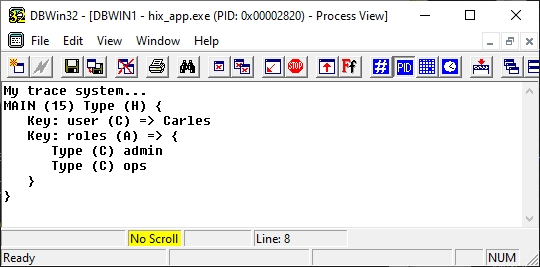
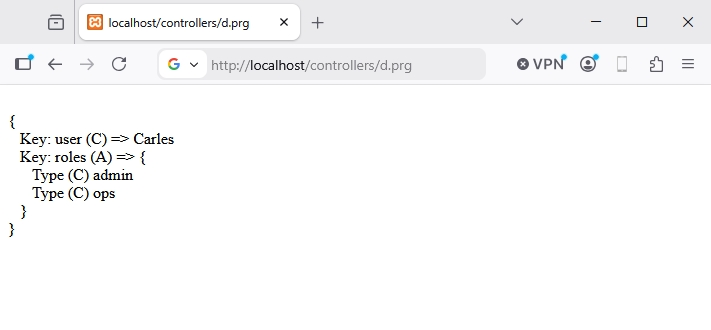

🔍 Tracing¶
During development, the fastest way to understand what's happening in your code
is not a step-by-step debugger, but dropping a trace. HIX exposes a
family of functions _d(), _t(), _w() that accept
any type of variable (scalar, hash, array, object) and dump it
formatted, with type and context.
The _d() and _t() functions use dbgView, dbwin, etc. for Windows, and this utility
lets us quickly see what's happening in our code.
function main()
LOCAL hData := { "user" => "Carles", "roles" => { "admin", "ops" } }
_t( 'My trace system...' ) // Only message
_d( hData )
retu nil

The _w() function is the same as _d() but converts the result to
web format, and we can output the trace in the browser if we want.
function main()
LOCAL hData := { "user" => "Carles", "roles" => { "admin", "ops" } }
? _w( hData )
retu nil

The functions¶
| Function | Destination | When |
|---|---|---|
_d(...) |
OutputDebugString (Windows) or TraceLog (Linux/Mac) | Development traces, visible in DebugView |
_t(...) |
Same as _d but without procedure prefix |
"Clean" traces for bulk output |
_w(...) |
Returns HTML string with <br> |
Inject traces into an HTML page |
The functions accept N arguments of any type:
Trace examples¶
Tracing in a process...¶
FUNCTION _ProcessOrder( nId )
LOCAL hOrder, lOk
_d( "→ _ProcessOrder", nId )
hOrder := _LoadOrder( nId )
_d( "loaded:", hOrder )
lOk := _Save( hOrder )
_d( "← _ProcessOrder", lOk )
RETURN lOk
Dev-only¶
Inspecting an unknown object / hash¶
FUNCTION _Dump( xValue, cLabel )
_d( cLabel + ":", xValue )
RETURN NIL
// ...
_Dump( oReq, "request" )
_Dump( UContext():hData, "context.data" )
After each middleware¶
To understand why a middleware fails:
FUNCTION HixMwMiAuth( oCtx )
_d( "session:", USession("user") )
_d( "headers:", oCtx:oReq:hHeaders )
IF Empty( USession("user") )
_d( "Auth FAIL — no session" )
oCtx:lHandled := .T.
oCtx:oReq:Redirect( "/login", 302 )
RETURN .F.
ENDIF
_d( "Auth OK" )
RETURN .T.
Clean output with _t()¶
When you already know where you are and only want the value (without
MYFUNC (42) Type (H)):
Difference from Logger¶
_d() / _t() |
l() / ld() / le() |
|
|---|---|---|
| Destination | OutputDebugString / TraceLog | hix.log (file) |
| Persistent | ❌ (volatile — visible in DebugView, not saved) | ✅ (rotation + levels) |
| Format | Block with type + indentation | Line with timestamp + level |
| Production | Remove it — no visible benefit | Keep it — basis for prod troubleshooting |
| Recommended amount | Whatever you need in dev | Only significant events (start, error, ...) |
When a function is stable, migrate useful traces to l()/le()
and delete the _d() calls that only served you at the moment.
Best practices¶
_d()is disposable. You add it to understand a bug, you remove it when you fix it. If you want it to survive, convert it tol()orld().- Don't trace secrets. Tokens, passwords, JWTs — never through
_d(). Even though it's only visible in dev, DebugView logs can end up in a screenshot. - Wrap in
UIsDev()anything that might reach production by mistake. - One trace on entry, one on exit. For functions you suspect are problematic, mark entry with args and exit with result.
- Don't leave traces in shared code. If your PR adds
_d()in HIX framework files, it won't pass review — it's noise for others.